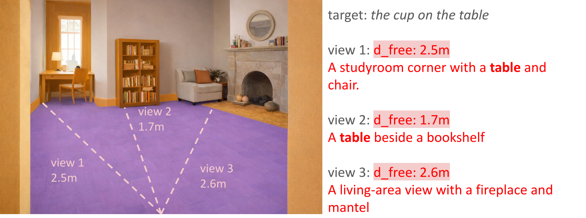

Rewrite + verify pipeline
LLM rewriting proposes an absent-but-plausible target, and a VLM verifier checks room views before accepting the new false-premise instruction.
Feasibility-aware vision-and-language navigation under false-premise instructions.
Conventional Vision-and-Language Navigation (VLN) benchmarks assume instructions are feasible and the referenced target exists, leaving agents ill-equipped to handle false-premise goals. We introduce VLN-NF, a benchmark with false-premise instructions where the target is absent from the specified room and agents must navigate, gather evidence through in-room exploration, and explicitly output NOT-FOUND. VLN-NF is constructed via a scalable pipeline that rewrites VLN instructions using an LLM and verifies target absence with a VLM, producing plausible yet factually incorrect goals. We further propose REV-SPL to jointly evaluate room reaching, exploration coverage, and decision correctness. To address this challenge, we present ROAM, a two-stage hybrid that combines supervised room-level navigation with LLM/VLM-driven in-room exploration guided by a free-space clearance prior. ROAM achieves the best REV-SPL among compared methods, while baselines often under-explore and terminate prematurely under unreliable instructions.
A new benchmark for false-premise navigation instructions that require explicit, evidence-grounded NOT-FOUND decisions.
A metric that jointly measures room reaching, exploration coverage, and final decision quality.
A two-stage framework that combines room-level navigation with in-room exploration and verification.
ROAM improves REV-SPL by 45% over the supervised baseline while using only room-level annotations.
Introduces a VLN setting where instructions can be semantically valid but factually infeasible, requiring agents to verify absence rather than assume success.
Builds infeasible episodes via an LLM rewrite step and a VLM-based absence verifier, yielding paired feasible / infeasible instructions under the same navigation context.
Refines evaluation beyond shortest-path success by rewarding sufficient exploration and penalizing unsupported early NOT-FOUND decisions.
ROAM splits the problem into room-level localization and evidence-gathering in-room search, while FREE supplies a geometric clearance prior for exploration.
LLM rewriting proposes an absent-but-plausible target, and a VLM verifier checks room views before accepting the new false-premise instruction.

Room-level navigation gets the agent into the target room; an in-room explorer then gathers evidence and predicts FOUND or NOT-FOUND.

FREE estimates free-space clearance for candidate directions and helps the explorer prioritize larger, still-unsearched regions.
This page already includes the current arXiv link. Code and data buttons are left in place so you can turn them live later with one small edit.
If you find this work useful, please cite:
@article{su2026vlnnf,
title = {VLN-NF: Feasibility-Aware Vision-and-Language Navigation with False-Premise Instructions},
author = {Su, Hung-Ting and Wang, Ting-Jun and Yeh, Jia-Fong and Sun, Min and Hsu, Winston H.},
journal = {arXiv preprint arXiv:2604.10533},
year = {2026}
}